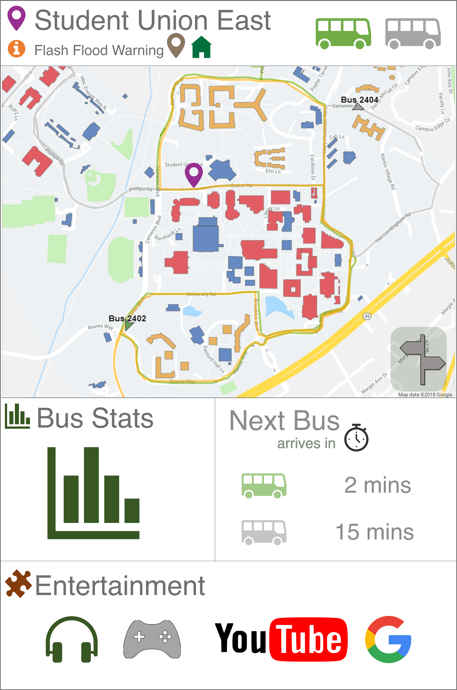
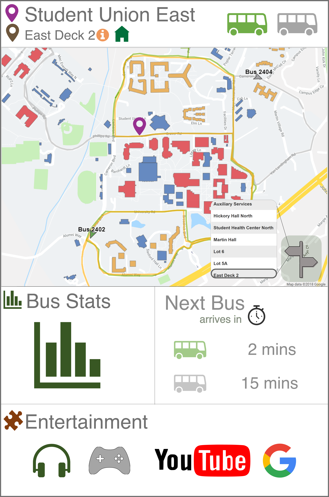
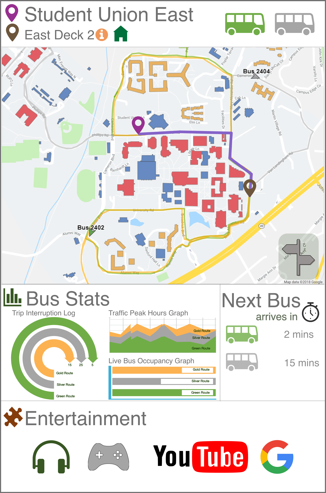
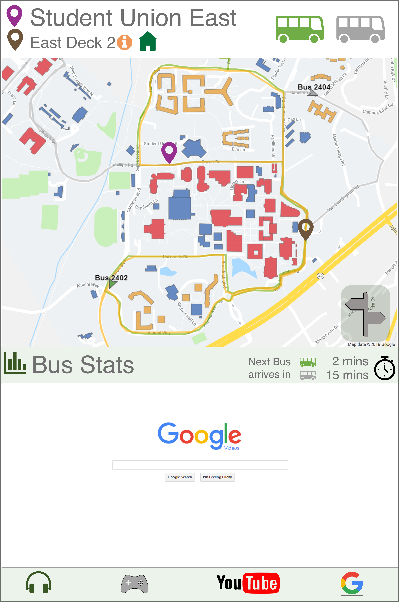
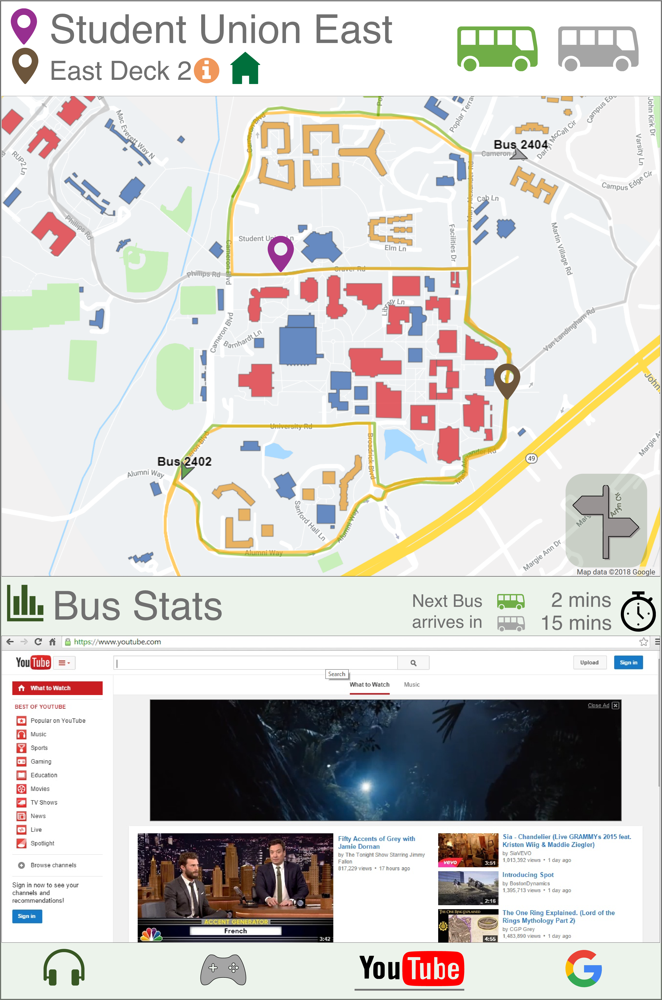

UNCC Transient
| Role | UX Research and UI Design |
| Team Size and Duration | 4 members, 4 months |
| Tools | Adobe XD |
Background

Research
User Personas

Peter
College Student
Motivations
Peter is an architecture student and has to carry a lot of designing material everyday. He loves to walk but does not like walking just before the class to avoid fatigue. His hobbies include soccer, photography and watching television shows.
Goals
Peter has just reached the campus and wants to take the bus to his department. He likes to reach class on time. He wishes to find out the most feasible bus route and the time after which the next bus would arrive.
Frustrations
Peter does not know how long it will take for the bus to come. There is no one at the bus stop and he does not know which bus to take.
William
Bus Driver
Motivations
William works as a bus driver for UNCC buses. He has been driving the buses for 10 years, and he loves his job. William is married and has 3 children. His hobbies include gardening and building model trains. William lives a bit away from campus and drives to work each day.
Goals
William has arrived on his shift at time and logs in and gets settled on the bus in no time. All the people who got on the bus were very cooperative. His shift ended on time because the next driver on duty reached the bus stop before time.
Frustrations
William's schedule got delayed due to initial login issues and traffic. This frustrated the passengers. Also, he could not take his lunch break either as his driver replacement was late.
Jane
College Student
Motivations
Jane is an engineering student. She carries lots of books to carry everyday so she takes the bus instead of walking. She has an expensive laptop too so she prefers the bus when it rains. She uses the bus tracking application and has managed to deal with it.
Goals
Jane wants to go to a building on the other side of the campus. She uses the mobile application to track the bus and the bus arrives on time. The driver is friendly and she reaches the other building on time.
Frustrations
Jane is waiting for the bus which has been delayed and the mobile application has no updates about it. She is getting late for class and is frustrated like other students waiting at the bus stop.
User Storyboards

Design Prototype





